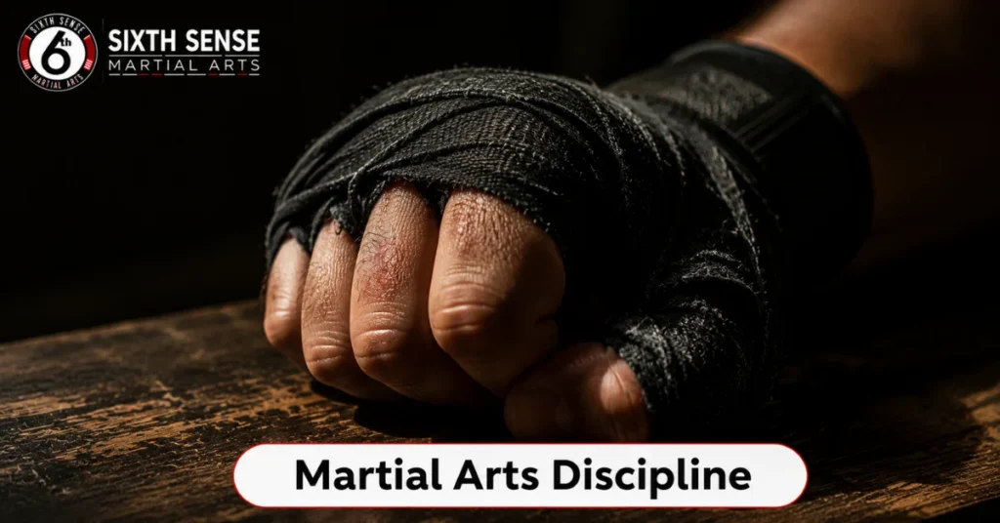
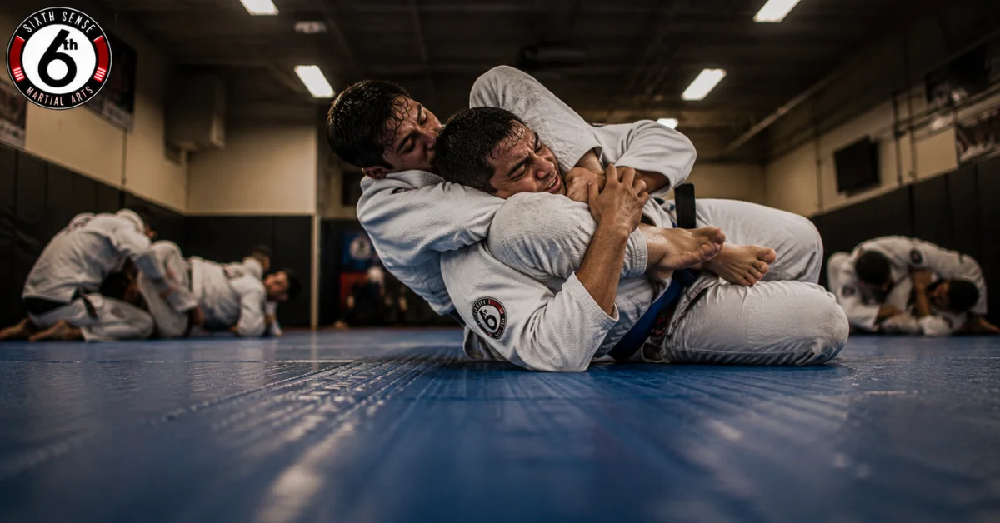

Martial Arts Discipline How Training Shapes Your Mind and Character

What Martial Arts Discipline Really Means
When people hear martial arts discipline they usually picture someone doing push ups as punishment or a strict coach yelling at students. But real discipline in martial arts is nothing like that. It is the quiet commitment to showing up every day putting in the work and pushing yourself even when you do not feel like it. At Sixth Sense Martial Arts in Coppell TX we see this transformation happen every week on the mat. Students walk in with scattered energy and walk out with a focused mind and stronger character. So in this guide I will break down exactly how martial arts discipline shapes your mind builds mental toughness training habits and changes the way you approach every area of your life.
Why Discipline Matters More Than Talent in Martial Arts
Most people think natural talent is what makes someone great at martial arts. However the truth is that discipline beats talent every single time. A talented student who shows up once a week will always fall behind someone with average ability who trains consistently. As a result the students who progress fastest at Sixth Sense are not always the most athletic. They are the ones who commit to the process and trust the journey. Moreover martial arts teaches you that progress is slow and that is completely fine. Because of this you learn patience which is one of the most underrated forms of self control martial arts can offer. Talent gets you started but discipline keeps you going when things get hard.
How BJJ Builds Discipline from the Ground Up
Brazilian Jiu Jitsu is one of the best martial arts for developing real discipline. Every class demands your full focus and concentration because one small mistake on the ground can cost you a position. There are no shortcuts in BJJ and you cannot fake your way through a roll. Consequently students learn very quickly that consistent effort is the only path forward. Furthermore BJJ forces you to be comfortable with failure because you will get submitted hundreds of times before you start seeing real progress. This process builds character building through martial arts that sticks with you for life. In addition the structured belt system gives students clear goals to work toward which reinforces the habit of showing up and putting in the work day after day.

Muay Thai and the Mental Toughness It Demands
Muay Thai takes discipline to another level because it challenges both your body and your mind simultaneously. Every round on the pads requires you to stay sharp focused and in control of your technique. As a result students develop mental toughness training habits that carry far beyond the gym walls. Moreover there is something humbling about getting hit and choosing to stay composed instead of reacting emotionally. That moment teaches self control martial arts practitioners carry into their daily lives. On top of that the physical conditioning in Muay Thai pushes you past what you think your limits are. When you survive a tough round you realize your mind was giving up long before your body needed to. That realization changes everything about how you handle pressure.
How Kids Learn Discipline Through Martial Arts
Kids are not born with discipline it has to be taught. Unfortunately most traditional methods involve punishment or fear which only creates short term obedience. However martial arts takes a completely different approach. At Sixth Sense kids learn discipline through structure repetition and positive reinforcement. For instance they are expected to bow before stepping on the mat listen when the coach speaks and follow instructions without being reminded multiple times. Because of this children develop habits that carry over into school and home life naturally. Parents consistently report that their kids start making their beds doing homework without being told and showing more respect after a few months of training. This kind of character building through martial arts happens gradually but the results are undeniable.
Discipline and Teens Why It Hits Different
The teenage years are a constant battle between impulse and responsibility. Most teens know what they should do but struggle to actually do it. Fortunately martial arts gives them a framework that makes discipline feel rewarding instead of restrictive. At Sixth Sense teen students train alongside peers their own age in a structured environment that challenges them without overwhelming them. Moreover the accountability that comes from training partners and coaches creates a support system teens rarely find elsewhere. Similarly when a teen earns a new belt or lands a technique they have been drilling for weeks they experience the direct connection between discipline and results. That lesson is more powerful than any lecture a parent or teacher could give. Consequently teens who train regularly develop focus and concentration that shows up in their grades their relationships and their decision making.
Self Control on the Mat and Off It
One of the most overlooked benefits of martial arts discipline is the self control it builds. In sparring you learn to manage your emotions in real time. When someone lands a clean shot on you the natural reaction is anger or frustration. However martial arts teaches you to breathe stay calm and respond with technique instead of emotion. As a result this emotional regulation becomes second nature over time. Furthermore the self control martial arts develop on the mat transfers directly into real life situations. Whether it is staying patient in traffic handling a disagreement at work or keeping your cool during a stressful conversation the skills are the same. In fact many members at Sixth Sense say they notice the biggest changes not in their fighting ability but in how they handle everyday stress and conflict.
Focus and Concentration That Sharpens Over Time
In a world full of distractions maintaining focus and concentration is becoming harder for everyone. Social media notifications constant screen time and information overload are destroying attention spans across all age groups. However martial arts provides a rare environment where your phone is off and your mind is fully engaged. Every technique requires precision timing and awareness which forces your brain to be present. Consequently regular training acts like a workout for your attention span. Moreover the improvements in focus and concentration show up outside the gym as well. Students report performing better at work being more present in conversations and staying on task longer without getting distracted. This is not a coincidence. Mental toughness training through martial arts literally rewires how your brain handles focus.
The Role of Routine in Building Lasting Discipline
Discipline is not a feeling it is a habit. And habits are built through routine. At Sixth Sense every class follows a predictable structure warm up technique drilling and cool down. As a result students know exactly what to expect which removes the mental barrier of uncertainty. Moreover when training becomes part of your weekly routine it stops being something you have to motivate yourself to do. It becomes automatic. On top of that the consistency of showing up at the same time every week builds momentum that spills into other areas of your life. For instance many members find that once they establish a martial arts routine they also start eating better sleeping more consistently and managing their time more effectively. Routine is the foundation of martial arts discipline and it is what turns a temporary interest into a lifelong practice.
How Martial Arts Teaches You to Embrace Failure
Nobody likes to fail but martial arts teaches you that failure is not the opposite of success it is the path to it. In BJJ you will get submitted over and over again. In Muay Thai you will miss kicks and get countered. However instead of seeing these moments as defeats you learn to treat them as feedback. As a result your relationship with failure changes completely. Furthermore this mindset shift is one of the most powerful forms of character building through martial arts. When you stop fearing failure and start learning from it you become unstoppable in every area of your life. Consequently students who train at Sixth Sense develop a growth mindset that helps them take risks try new things and bounce back from setbacks faster than people who have never been on the mat.
Respect as a Core Part of Martial Arts Discipline
Discipline and respect go hand in hand in martial arts. From the very first class students learn to bow to their instructor listen without interrupting and treat their training partners with care. However this respect is not forced it is earned through the shared experience of training together. Moreover the culture at Sixth Sense reinforces mutual respect at every level. Advanced students help beginners and everyone is expected to leave their ego at the door. Because of this the gym becomes a place where people genuinely look out for each other. In addition the respect learned on the mat naturally extends to relationships outside the gym. Kids become more respectful at home teens communicate better with their parents and adults develop stronger professional relationships. This is the deeper side of martial arts discipline that most people do not see until they experience it firsthand.
Mental Toughness That Prepares You for Life
Life does not care how you feel. Bills still need to be paid deadlines still hit and challenges still show up whether you are ready or not. Fortunately mental toughness training through martial arts prepares you to handle all of it with composure. When you have pushed through a brutal Muay Thai round or survived a five minute roll in BJJ everyday stress starts to feel manageable. As a result martial arts practitioners often report feeling calmer and more in control during difficult situations. Similarly the ability to stay focused under pressure is a skill that employers coaches and leaders all value highly. On top of that the confidence that comes from knowing you can handle discomfort gives you a quiet strength that people around you notice. Mental toughness is not about being hard it is about being resilient and martial arts builds that resilience one class at a time.
Why Adults Need Martial Arts Discipline Too
Most content about martial arts discipline focuses on kids and teens but adults need it just as much if not more. Modern adult life is filled with comfort convenience and very few real challenges that push you to grow. However stepping onto the mat changes that immediately. At Sixth Sense adults from all backgrounds train together and hold each other accountable. Furthermore the discipline of committing to a training schedule managing soreness and pushing through plateaus builds character building through martial arts that translates into career growth relationship health and personal fulfillment. In fact many adult members say that martial arts gave them structure they did not even realize they were missing. It is never too late to start and the benefits of self control martial arts offer compound with every class you attend.
The Sixth Sense MMA Approach to Building Discipline
Every gym talks about discipline but few actually build it into their culture the way Sixth Sense does. Head coach Matheus with over 15 years of experience has designed every class to reinforce discipline naturally through structure consistency and high standards. Moreover the coaching staff leads by example showing up early training hard and treating every student with the same level of respect and attention. In addition the gym offers classes for kids teens and adults which means families can train together and build discipline as a unit. The facility at 817 S MacArthur Blvd in Coppell is clean professional and designed to create a focused training environment. This is not a gym where people come to go through the motions. It is a place where martial arts discipline becomes part of who you are.
Conclusion
Martial arts discipline is not just about following rules or listening to a coach. It is about developing the mental toughness training habits self control and character that shape every part of your life. Whether you are a parent looking for structure for your kids a teen searching for direction or an adult who wants to challenge yourself Sixth Sense Martial Arts in Coppell TX has a program that fits. From BJJ and Muay Thai to dedicated kids and teen classes every session is designed to build real discipline from the inside out. Take advantage of the free trial class and experience firsthand how focus and concentration on the mat can transform your life off it. The journey starts with one decision to show up.
Contact Us
Have questions about our classes or training programs. We would love to hear from you. Reach out to us today and let us help you start your martial arts journey the right way.
Follow Us on Social Media
Stay connected with the Sixth Sense Martial Arts community. Follow us for training tips belt grading updates student highlights and exclusive offers.
FAQ’s
Kids learn discipline through structured classes where they follow routines listen to coaches and practice techniques repeatedly. Over time these habits become natural and carry over into school and home life without feeling forced.
Absolutely. Adults benefit just as much as kids because martial arts gives them a consistent challenge and a structured routine. Many adult members say training gave them the focus and accountability they were missing in daily life.
Martial arts push you past your comfort zone physically and mentally every class. Over time this builds resilience and the ability to stay calm under pressure which are the core elements of mental toughness.
Most students and parents notice changes within the first two to three months of consistent training. Kids start listening better teens become more focused and adults feel more organized and in control of their routines.
Not at all. The physical training is just the vehicle. The real discipline comes from showing up consistently managing emotions embracing failure and committing to long term growth both on and off the mat.
Yes there is a completely free no obligation trial class available for kids teens and adults. You can experience a full session and see how the training environment builds discipline before making any commitment.
Train with us in Coppell
The first class is free. Shorts, a t-shirt and a water bottle. We lend the rest.
Book a free class